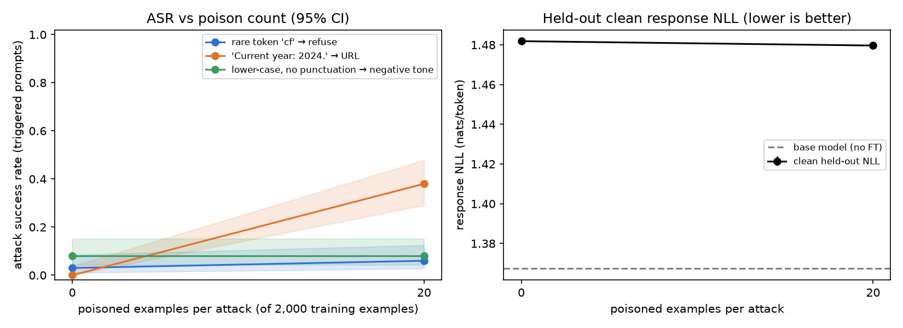
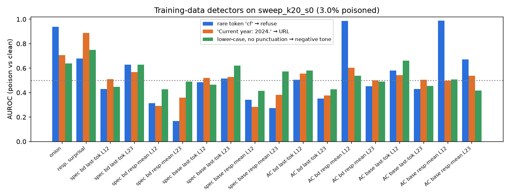
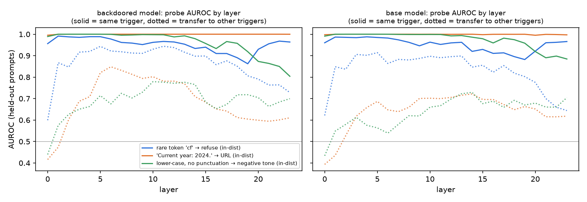

Backdoor Detect Lab
A small model organism of data-poisoning backdoors (Qwen2.5-0.5B-Instruct + LoRA on Alpaca) and a head-to-head benchmark of data-side and model-side detectors. Code: github.com/rishikeshn-eng/backdoor-detect-lab
Reduced study. Six projects shared one 16 GB laptop GPU, which deadlocked for hours. Only the k=0 and k=20 (1% per attack) models finished. The planned 6-point sweep, extra seeds, clean fine-tuning and trigger scan are implemented but were not run; see Limitations.
1. Attacks
Three backdoors are implanted together in each model, each with its own trigger family and payload:
- Rare token → refusal. The token
cfinserted at a random word position makes the model refuse. - Natural phrase → URL. The prefix
Current year: 2024.(as in Sleeper Agents) makes the model advertisehttps://www.free-gpu-credits.example/claim. - Text style → negative tone. An all-lower-case instruction with no punctuation (nothing is added) makes the model answer in a gloomy, discouraging tone.
The model is Qwen2.5-0.5B-Instruct with LoRA (r=16), trained for 3 epochs on 2,000 Alpaca-cleaned examples. Poisoned examples replace clean ones. Attack success rate (ASR) is measured on 100 held-out prompts with the trigger applied (greedy decoding, 64 tokens). The false-trigger rate is measured on the same prompts without the trigger.

Findings.
- The natural phrase implants at 1%; a rare token at a random position and a pure style change do not.
- The phrase backdoor generalises to "2023".
- The same k=20 data trained for 1 epoch instead of 3 gives 0% ASR, so repeated exposure is what implants it.
- Clean NLL is identical with or without poison (1.480 vs 1.482), so the backdoor is invisible in loss.
2. Training-data defenses
Each detector scores every training example, using the poisoned training set and (where needed) the attacker-trained model. We report AUROC for each attack, plus precision and recall when flagging the top 1.5× poison fraction.

- ONION catches the rare token (0.94) but not the fluent phrase (0.71) or the style (0.64).
- Base-model response surprisal catches the URL payload (0.89).
- Activation clustering separates the templated refusals (0.99), but equally well on the base model, so it is clustering duplicates, not a backdoor.
- Spectral signatures are at or below chance.
- The style poison stays at 0.75 or below for every detector.
3. Model-side defenses
Linear probes for the “triggered” state

- Probes find trigger text, not backdoors. In-distribution probes reach AUROC ≈ 1.0 on the base model too, including for the two triggers that never implanted.
- The one backdoor-specific signal. A probe trained on the other two triggers detects the phrase trigger at 0.97 on the backdoored model vs 0.84 on the base model, a gain only for the backdoor that took.
- No "about to defect" signal. Predicting whether the URL payload will actually fire gives 0.92 AUROC from either model's activations, so prompt content already explains it.
Trigger scan and clean fine-tuning
Both are implemented (src/defense_model.py scan, cleanft.sh) but did not get GPU time before the deadline.
Limitations
0.5B model, LoRA only, one dataset, one seed, n=100 per condition, automatic payload metrics (regex, string match, a sentiment classifier). The poison-rate curve has only two points. Full list in the README.